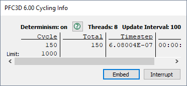
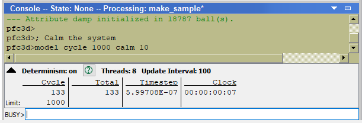

计算循环 对话框
程序进行循环计算时，会显示 计算循环 对话框。

按 会使该对话框插入到控制台窗格中，如下所示。可以根据需要单击向上箭头按钮（）取消嵌入该对话框。


对话框中报告的元素如下所述。
- 确定性：
- 指示这些计算的确定性是“开启”还是“关闭”。可使用相邻的“帮助”按钮（
 ）转到本文档中介绍确定性设置用法的主题。
）转到本文档中介绍确定性设置用法的主题。 - 线程：
- 指示正在使用的线程数。
- 更新间隔：
- 指示绘图更新之间的计算步数。
持续更新的表元素
- 循环
- 报告当前计算循环数。
- 总计
- 报告计算循环总数。
- 时间步
- 报告当前时间步的大小。
- 时钟
- 报告自循环计算开始以来所经过的时间。
- 限制
- 指示启动当前循环计算的命令所应用的循环限制（如果给出了该限制）。
| 这些内容对您有帮助吗？… | FLAC3D © 2019, Itasca | 原文更新于 2020 年 10 月 8 日 |